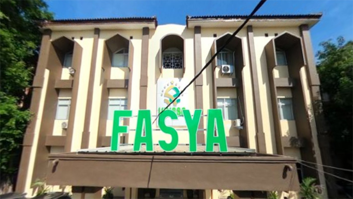
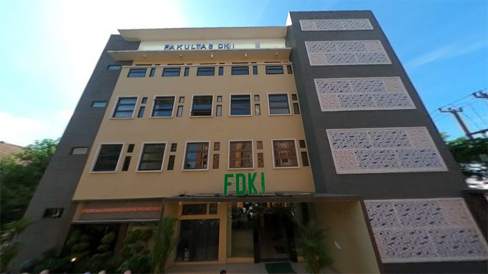
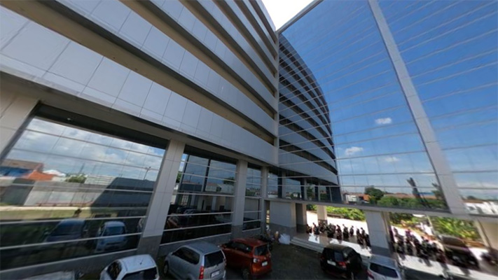
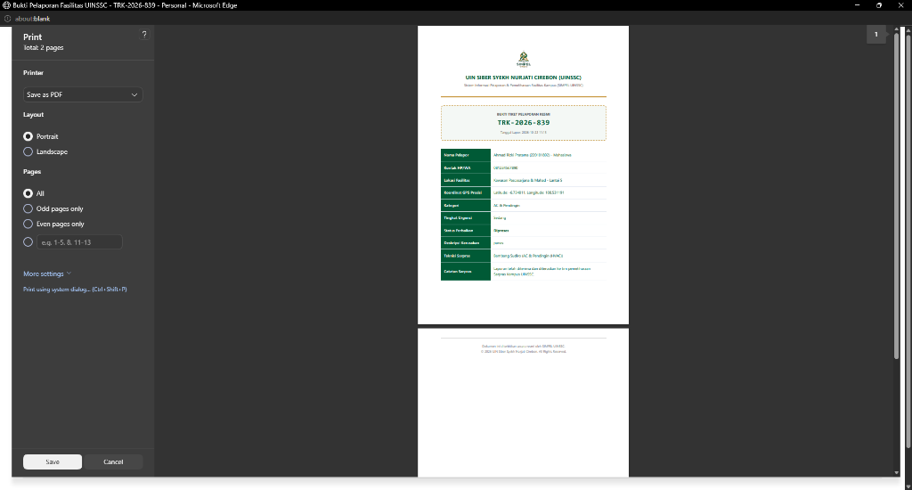
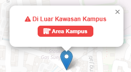

Latar Belakang
Permasalahan
Prosedur Manual: Laporan via chat WA & lisan sering tercecer tanpa rekam jejak resmi.
Lokasi Bias: Keluhan diajukan dari luar kawasan kampus tanpa bukti koordinat fisik yang sah.
Status Tidak Terbuka: Pelapor tidak mengetahui proses verifikasi & teknisi penanggung jawab.
Tiket Ganda Berulang: Satu kerusakan dilaporkan berkali-kali hingga membebani antrean teknisi.

Solusi Terpadu
Fungsi & Solusi
Digitalisasi 24/7: Pelaporan keluhan sarpras fleksibel kapan saja lewat aplikasi web PWA.
Geofencing GIS 5 Zona: Memastikan pelapor berada di dalam kawasan fisik kampus secara akurat.
Standarisasi SLA: Pelacakan 5 tahap perbaikan secara transparan dengan batas waktu pasti.
Arsip Tiket PDF: Penerbitan bukti pengaduan resmi 1 lembar A4 dilengkapi kode QR verifikasi.

Layanan Sarpras
Fasilitas Utama
Kelistrikan & Daya: Panel MCB gedung, stopkontak kelas & penerangan lab.
HVAC & Pendingin: AC ruang kuliah, lab cyber & pendingin ruang server.
Audio Visual: Proyektor multimedia, sound seminar & smart display.
Sanitasi Gedung: Kran air bersih, toilet kampus, meja kursi & pintu.
Alur Penggunaan Aplikasi (Cara Kerja)
8 Langkah Mudah Terintegrasi
Buka Web
Akses portal resmi
Login SSO
NIM/NIP + CAPTCHA
Pilih Aset
Kategori & ruangan
Cek GIS
Validasi 5 zona GPS
Unggah Foto
Bukti fisik kerusakan
Tiket TRK
QR Code & PDF siap
Teknisi Cek
Perbaikan via SLA
Selesai
Tuntas terverifikasi
Fitur Sivitas Pelapor
Mahasiswa, Dosen & Tendik
SSO & CAPTCHA
Autentikasi akun kampus resmi anti-bot
Geofencing 5 Zona
Validasi koordinat GPS kawasan kampus
Filter Anti-Spam
Cegah pelaporan tiket ganda sejenis
Kuota 3 Pengaduan
Antrean tertib sesuai kapasitas teknisi

Salinan Tiket Sah 1 Lembar Cetak
Fitur Admin & Teknisi
Pengelola Sarpras & Tim Teknisi
Dashboard Metrik
Monitoring beban tiket live & grafik aset
Manajemen SLA
Standar batas respon 2, 6, 24, 48 jam
Disposisi Cerdas
Tugaskan teknisi spesialis yang sesuai
Rekapitulasi Audit
Ekspor CSV & rekap pemeliharaan rutin

Deteksi Radius Geofence Kampus
Sasaran
Pengguna Sistem
Mahasiswa: Pelapor sarpras kelas, lab komputer, toilet & fasilitas umum.
Dosen & Tendik: Pelapor sarpras ruang kantor, AC ruang kerja & ruang rapat.
Tim Sarpras: Pengelola disposisi tugas teknisi, SLA & audit berkala.
Teknologi
Dibangun Dengan
PWA Web App
Offline Cache & Service Worker
Leaflet.js
GIS & Formula Haversine
Three.js
WebGL 3D Campus Cyber
Keamanan
DOMPurify & Anti-Bot CAPTCHA
Nilai Lebih
Keunggulan
Brand Resmi SIMPEL
Presisi GIS
100% tervalidasi
Transparan
Pantau 5 status live
SLA Terukur
Batas respon pasti
Terarsip
PDF QR Code sah